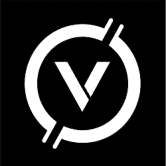
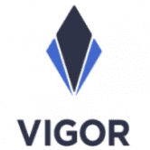
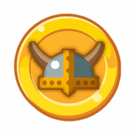
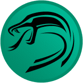
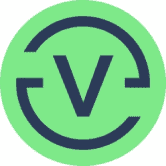
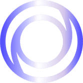

Kimochi 从金融界的“胜利之情”到日本成人视频（JAV）的压倒性感情 – Kimochi Kimochi Finance 是一个与 DeFi 应用程序完全集成的平台，为用户带来最大的利润。日文kimochi
KING FOREVER King Forever 是一个去中心化的娱乐生态系统，包括：元界 MMORPG 是币安 S 上的全尺寸实时冒险角色扮演游戏King Forever 是一个独特的 meme 代币，它正在构建加密空间中扮演 Metaverse
Kingdom of Poseidon 具有疯狂 APR 的 BSC 上的最佳 DefiPoseidon’s Kingdom是一个[旅游岛 [定时任务])，玩家有 192 小时的时间来建造和升级总共 5 个新的固定结构，这些结构的资产会带来
KingMantaRaySwap KingMantaRaySwap 由 PancakeSwap 和 Yield Farming 分叉，以及在 BSC POLYGON AVAX Fantom 上运行的 Staking 平台。KingMantaRaySwap 由 PancakeSwap 和 Yield Farming 分叉，以及在 BSC POLYGON AVAXFantom 上运行的 Staking 平台KingManta
Kitten.Finance Kitten.Finance 是一个完整的 DeFi 生态系统：交换、借贷、期权、保险库等等。我们也在研究我们自己的 L2 解决方案。Kitten.finance 是一个 DeFi 生态系统，拥有
Kitty Farms Kitty Farms 是 BSC 上用于单产农业的去中心化解决方案，具有额外的机制来保护用户免受风险，因此您不必为高盈利能力而付出高昂的风险。用户将通过参与 KittySwap 上的流动
KIWI Wallet KIWI 钱包使用户能够在链下和链上进行快速、免费和私密的小额支付。 KIWI PoW 代币是一个社区项目，也是首批可开采的 ERC20/918 代币之一。没有预挖或 ICO。因此，它具
Kiyomi Finance POKI 最大供应量 80,00010% 转让税：1% 燃烧4% 用于农业POKICR 质押 5% 通货紧缩农业循环：耕种、转移、烧毁、再分配可变排放：农场收到的 POKI 总数除以 360000 块 基桥
Klandestino Swap 什么是 Klandestino Protocole？ (KlandestinoSwap) Klandestino Swap 是一个去中心化的“DEX”交易所，用于交换币安链网络上推出的 BEP-20 代币。这是一个允许交易者、开发商和流动性提供
Knights of the Round Table DeFi Knights DeFi 正在为币安智能链上的 DeFi 设定新标准。 我们相信，通过社区、荣誉和诚信，我们可以改变未来其他人处理 DeFi 的方式。 我们的目标如下：我们想要什么：对重
Lion Farming Lion Farming，基于 Polygon 的上一代单产农业 注册办公室地址于 2022 年 6 月 14 日从 Ffynnonddofn 74 High Street Fishguard Pembrokeshire SA65 9AU 更改为 16 Main Street Fishguard Pembrokeshire SA65 9HJ在南非，非洲狮（Panther
The Kong Finance 香港金融： 币安智能链上的自动化流动性安全收益农场。 特点和功能： 通证锁仓（新）通过： 一种新实施的 Harvest Lockup 机制，其中的锁定时间基于收获的代币与通常时
The Lab Finance (LABO) 什么是实验室财务？Lab Finance (LABO) 是一个以社区为中心的农业解决方案，具有治理和产生利润的 NFT，具有时间锁定合同。随着新代币的铸造和分发作为奖励，
Tron Mars MARS 引入了 24 小时收割冷却，收割少于 24 小时只会获得 50% 的数量。Tron Mars 正在使用 Facebook。加入 Facebook，与 Tron Mars 和您可能认识的其他用
Tron Ninja Staking 欢迎来到 Tron Ninja 质押！在 tron 中，我们首先为 NFT 添加了统一性，允许用户质押他们的 Ninja NFT 并获得 TNT 奖励 - Tron Ninjas Arcade Retro GameFi。一系列独特、时尚、多样的忍者，
TuringMachine TuringMachine 协议：Turing Swap - 稳定币的去中心化交易所、Turing Farms - Yield Aggregator、Turing No-loss - 无损失奖品游戏等。 图灵机。 图灵机是图
Tutti Frutti Tutti Frutti Finance 或 TFF 将是第一个基于币安智能链的低通胀、完全社区分布式的收益农业项目，保证奖励期超过 3 年！ Tutti Frutti Finance 是第一个基于币安智能链的低通胀、社区分布
TweetN Dashboard TweetN 是一个 Defi 协议，旨在结合两大行业：广告和区块链。 用户可以通过发布推文来赚钱。 在我们的 Dapp 上使用我们的键盘 NFT 赚取 $TweetN。 TweetN Dashboard — 一种 Defi 协议
Typhoon Network 关于台风 Typhoon 允许您在 2 个币安智能链 (BSC) 钱包之间发送安全、私密的交易。 它通过成为中间人来做到这一点：你将一些 BNB 存入合约并收到安全票据作为回报。 谁知
Ubeswap Ubeswap 的使命是通过让用户更便宜、更容易地交换、耕种和访问链上新的金融市场来提高 DeFi 的采用率和流动性。 Ubeswap 是 Celo 资产的去中心化交易所和自动化做市商协议。
UBU Finance UBU Finance (Universal Binance Union) - 是一个将最先进的 DEFI 应用程序与特殊功能相结合的平台，例如通货紧缩、利益共享……它是完全去中心化的。 我们的目标是建立全球金融合作伙伴
Unirex Finance Unirex Finance 是一个去中心化的农场收益项目，在 Fantom Chain、Polygon（很快）和 BSC（很快）上运行。 Unirex Finance 将提供以下服务： Yield Farm：通过质押流动
ValerianProtocol Valerian 是一个基于 DEFI + Ticket System 的高收益项目，除了常规的 Defi 解决方案外，它还有多个用例，缬草 - 金尖叫 NFTS ♦️ 仅 700 总 Scream 供应的 2%，您将成为幸运者之一？！🤯 从已
Vector Finance Alpha Homora 是在以太坊主网上推出的杠杆收益农业和杠杆流动性提供协议。 ETH 贷方可以在 ETH 上赚取高额利息。贷款利率来自杠杆收益农民/流动性提供者借入这些 ETH 来
 Venera Swap VeneraSwap 的目标是恢复用户对 BNB Smart Chain 网络和 DeFi 的信心，通过成为 BNB Smart Chain Netwtork 上第一个捕获 Curve Finance 锁定模型的 DAPP 并增加诸如 Boost 农场、非托管钱包和推荐。金星交换 使用 AMM 模型
Vesq VESQ 是基于 VSQ 代币的 Polygon (MATIC) 网络上可用的去中心化储备货币协议。每个 VSQ 代币都由 VESQ 库中的一揽子资产（例如 FRAX、DAI、MAI）支持，赋予其不可低于的
 VIGOR VIGOR 协议是一个借、借、存社区。 . VIGOR 协议的核心主题是加密支持的代币从根本上关注跳至零的价格风险和波动风险。 Vigor 协议能够分离和转移这些风险。 VIGOR 是在我
 Viking Swap Viking Swap (VIKING) 是具有通缩治理代币模型的下一代自动做市 (AMM) 去中心化交易所。我们是您在币安智能链和 Pancakeswap 交易所上运行的首选收益农场，还有许多其他功能可以让您赚
 ViperSwap ViperSwap 是一个自动化做市商 (AMM)、去中心化交易所 (DEX) 和允许用户交换代币、提供流动性和赚取交易费用的 DeFi 协议。 ViperSwap 是 VenomDAO 的一部分，它将在 Harmony 上发布多个 DeFi 产
 Vires.finance Vires.finance 是一种基于 Waves 区块链的去中心化非托管流动性协议，用户、钱包和 dapp 可以作为存款人或借款人参与其中。存款人向市场提供流动性以赚取被动收入，而借款人
 Vision Fi Vision 是一个在 OASIS 上结合 DEFI 和 NFT 的平台。 从 IDO 和 Mint（债券销售）筹集的 VISION 基金将使持续和可持续的回购成为可能。 $VSN 的耕作期有限，这也将确保 $VSN 的底价上涨


 钱包之间发送安全、私密的交易。")

 - 是一个将最先进的 DEFI 应用程序与特殊功能相结合的平台")